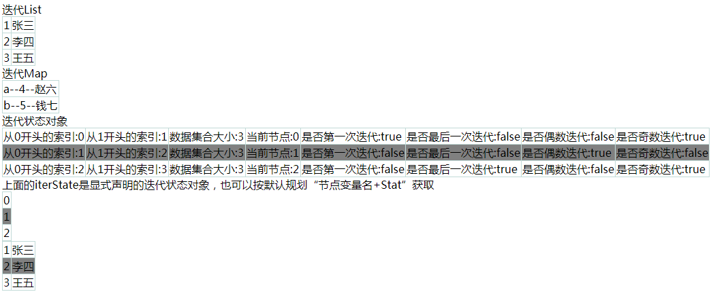

Thymeleaf数据迭代使用th:each属性，可以迭代数组、List、Set和Map等，数组、List、Set的迭代方法类似，迭代Map则会得到一个java.util.Map.Entry对象。
在迭代过程中，还可以获取迭代状态的变量，如迭代索引、数据集合大小等等。
开发环境：IntelliJ IDEA 2019.2.2
Spring Boot版本：2.1.8
新建一个名称为demo的Spring Boot项目。
1、pom.xml
加入Thymeleaf依赖
<dependency>
<groupId>org.springframework.boot</groupId>
<artifactId>spring-boot-starter-thymeleaf</artifactId>
</dependency>2、src/main/java/com/example/demo/User.java
package com.example.demo;
public class User {
Integer id;
String name;
public User(Integer id, String name) {
this.id = id;
this.name = name;
}
public Integer getId() {
return id;
}
public void setId(Integer id) {
this.id = id;
}
public String getName() {
return name;
}
public void setName(String name) {
this.name = name;
}
}3、src/main/java/com/example/demo/TestController.java
package com.example.demo;
import org.springframework.stereotype.Controller;
import org.springframework.ui.Model;
import org.springframework.web.bind.annotation.RequestMapping;
import java.util.ArrayList;
import java.util.HashMap;
import java.util.List;
import java.util.Map;
@Controller
public class TestController {
@RequestMapping("/")
public String test(Model model){
List<User> users = new ArrayList<User>();
users.add(new User(1,"张三"));
users.add(new User(2,"李四"));
users.add(new User(3,"王五"));
model.addAttribute("users", users);
Map<String, User> userMap = new HashMap<String,User>();
userMap.put("a", new User(4, "赵六"));
userMap.put("b", new User(5, "钱七"));
model.addAttribute("userMap", userMap);
return "test";
}
}4、src/main/resources/templates/test.html
<!DOCTYPE html>
<html lang="en">
<head>
<meta charset="UTF-8">
<title>Title</title>
<style type="text/css">
table { border-collapse:collapse;}
td { border: 1px solid #C1DAD7;}
</style>
</head>
<body>
<div>迭代List</div>
<table>
<tr th:each="user : ${users}">
<td th:text="${user.id}"></td>
<td th:text="${user.name}"></td>
</tr>
</table>
<div>迭代Map</div>
<table>
<tr th:each="map : ${userMap}">
<td th:text="${map.key} + |--| + ${map.value.id} + |--| + ${map.value.name}"></td>
</tr>
</table>
<div>迭代状态对象</div>
<table>
<tr th:each="data,iterState : ${#numbers.sequence(0,2)}"
th:style="|background-color:| + ${iterState.odd ? 'while' : 'gray'}">
<td th:text="|从0开头的索引:| + ${iterState.index}"></td>
<td th:text="|从1开头的索引:| + ${iterState.count}"></td>
<td th:text="|数据集合大小:| + ${iterState.size}"></td>
<td th:text="|当前节点:| + ${iterState.current}"></td>
<td th:text="|是否第一次迭代:| + ${iterState.first}"></td>
<td th:text="|是否最后一次迭代:| + ${iterState.last}"></td>
<td th:text="|是否偶数迭代:| + ${iterState.even}"></td>
<td th:text="|是否奇数迭代:| + ${iterState.odd}"></td>
</tr>
</table>
上面的iterState是显式声明的迭代状态对象，也可以按默认规划“节点变量名+Stat”获取
<table>
<tr th:each="data : ${#numbers.sequence(0,2)}"
th:style="|background-color:| + ${dataStat.odd ? 'while' : 'gray'}">
<td th:text="${data}"></td>
</tr>
</table>
<table>
<tr th:each="user : ${users}"
th:style="|background-color:| + ${userStat.odd ? 'while' : 'gray'}">
<td th:text="${user.id}"></td>
<td th:text="${user.name}"></td>
</tr>
</table>
</body>
</html>浏览器访问：http://localhost:8080，截图如下：

右键查看网页源代码，生成的HTML源码：
<!DOCTYPE html>
<html lang="en">
<head>
<meta charset="UTF-8">
<title>Title</title>
<style type="text/css">
table { border-collapse:collapse;}
td { border: 1px solid #C1DAD7;}
</style>
</head>
<body>
<div>迭代List</div>
<table>
<tr>
<td>1</td>
<td>张三</td>
</tr>
<tr>
<td>2</td>
<td>李四</td>
</tr>
<tr>
<td>3</td>
<td>王五</td>
</tr>
</table>
<div>迭代Map</div>
<table>
<tr>
<td>a--4--赵六</td>
</tr>
<tr>
<td>b--5--钱七</td>
</tr>
</table>
<div>迭代状态对象</div>
<table>
<tr style="background-color:while">
<td>从0开头的索引:0</td>
<td>从1开头的索引:1</td>
<td>数据集合大小:3</td>
<td>当前节点:0</td>
<td>是否第一次迭代:true</td>
<td>是否最后一次迭代:false</td>
<td>是否偶数迭代:false</td>
<td>是否奇数迭代:true</td>
</tr>
<tr style="background-color:gray">
<td>从0开头的索引:1</td>
<td>从1开头的索引:2</td>
<td>数据集合大小:3</td>
<td>当前节点:1</td>
<td>是否第一次迭代:false</td>
<td>是否最后一次迭代:false</td>
<td>是否偶数迭代:true</td>
<td>是否奇数迭代:false</td>
</tr>
<tr style="background-color:while">
<td>从0开头的索引:2</td>
<td>从1开头的索引:3</td>
<td>数据集合大小:3</td>
<td>当前节点:2</td>
<td>是否第一次迭代:false</td>
<td>是否最后一次迭代:true</td>
<td>是否偶数迭代:false</td>
<td>是否奇数迭代:true</td>
</tr>
</table>
上面的iterState是显式声明的迭代状态对象，也可以按默认规划“节点变量名+Stat”获取
<table>
<tr style="background-color:while">
<td>0</td>
</tr>
<tr style="background-color:gray">
<td>1</td>
</tr>
<tr style="background-color:while">
<td>2</td>
</tr>
</table>
<table>
<tr style="background-color:while">
<td>1</td>
<td>张三</td>
</tr>
<tr style="background-color:gray">
<td>2</td>
<td>李四</td>
</tr>
<tr style="background-color:while">
<td>3</td>
<td>王五</td>
</tr>
</table>
</body>
</html>